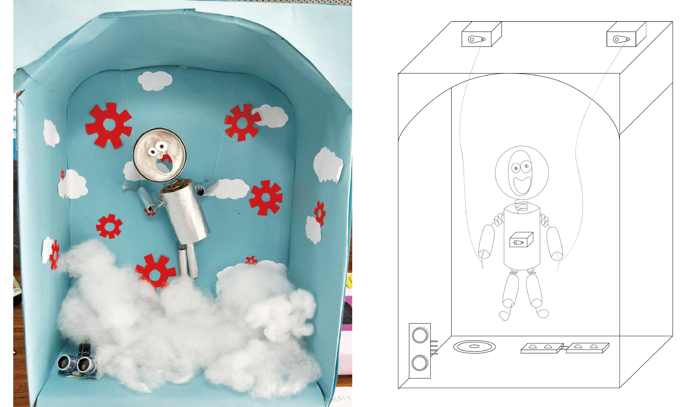
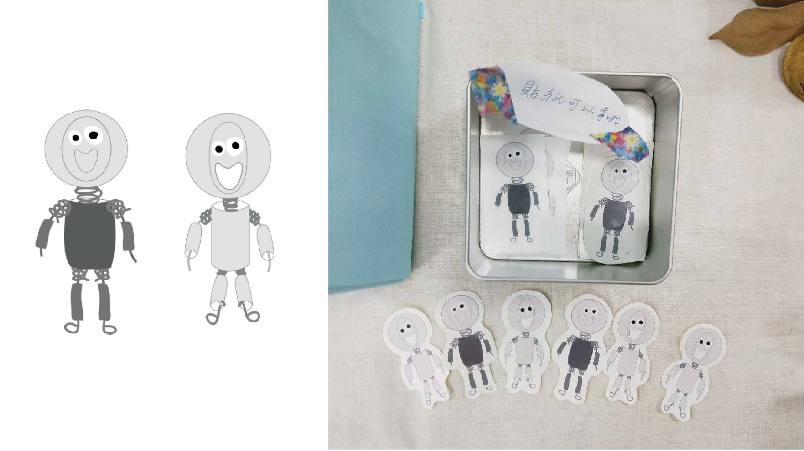

Volo舞動雲端
介紹
生活中有許多煩人的瑣事，我們希望透過靠近裝置裡的可愛小機器人VOLO帶給大家生活中的小歡樂暫時拋棄煩惱，笑一個就好，也希望大家和VOLO一樣可以往自己的夢想勇敢前進。 VOLO是一個愛跳舞的機器人，他的夢想是希望能夠飛上天空自由自在，因為機器人給人感覺也是由廢鐵、不要的東西之類拼湊組成的，所以我們收集了一些平常用完就會丟掉的東西，來組成VOLO，讓體驗者發現生活一些用過的東西也可以回收再利用。
展示影片
VOLO的名字是從西班牙文取出來的，在西班牙文裡有他飛的意思，也呼應了這個裝置想表達的核心理念，就是勇敢追夢。

